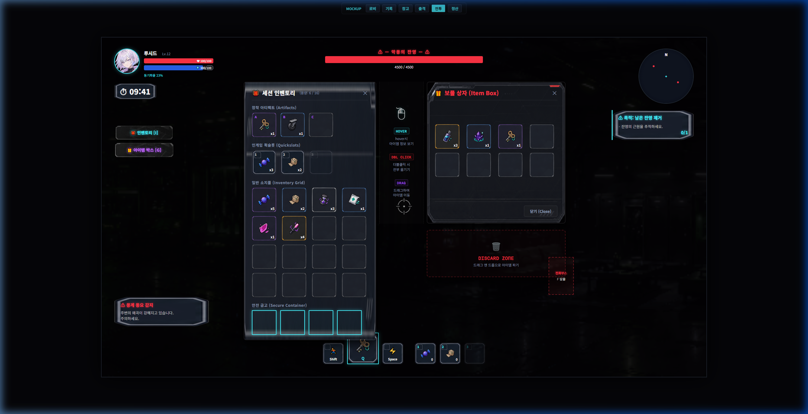

Core Loop
검증 목표
최종 P0의 핵심 질문은 “익스트랙션 플레이로 회수한 보상이 캐릭터 애착 보상과 다음 출격 준비로 이어지는가”입니다. 이를 위해 기억 파편, 동조율, 개인 심상 기록, 창고 저장, 소지품 장착이 하나의 플레이 사이클 안에서 연결되도록 범위를 고정했습니다.
Project Management
PM 업무
- 마스터 일정, 주간 마일스톤, 일별 일정표 기준 정리
- 작업 보드와 티켓 생성, 블로커 기록, 진행률 관리
- P0/P0.5 범위 통제, 기능 동결 기준과 수정 가능 항목 문서화
- QA 시트 운영, 버그 우선순위 분류, RC 빌드 체크리스트 작성
- 발표 자료 취합, 시연 동선 체크리스트와 백업 자료 관리
Concept Design
컨셉 기획 초안
- 캐릭터 컨셉, 역할군, 전투 포지션 초안 작성
- 기본/전용 무장, 몬스터, 방어구, 아이템 및 오브젝트 컨셉 초안 작성
- 서브컬처 캐릭터 애착 요소와 동조/몽흔 반응 제안
- 프롤로그, 사이드스토리, 캐릭터 심층기획 초안 작성
- P0 비주얼 리소스 요구사항 정리 및 팀 검수용 원본 문서 아카이빙
Programming
구현 기록
- 마우스 커서 조준 기반 히트스캔 무기 판정 구현
- 아이템 박스 상호작용, 상자 UI, 인벤토리 연동 및 픽업 흐름 구현
- 에너미 스폰 구조, 순찰/감지/추적 AI, 먹잇감 차단 이동 로직 구현
- 아티팩트 장착, 루팅, 장착 효과 적용 흐름 구현
- 데이터 기반 VFX Catalog, Runtime Pool, VFX 이벤트 연결 구조 구현
- JSON 기반 튜토리얼 안내 데이터,
TutorialManager, TutorialScene 진행 시스템 구현

UX Flow
전투, 파밍, 정산으로 이어지는 플레이 흐름
인게임에서는 이동, 조준, 공격, 적 조우, 아이템 박스 루팅, 탈출이 하나의 흐름으로 이어집니다. 결과창에서는 획득한 기억 파편과 소모품이 각각 서사 보상과 다음 출격 준비로 분리 정산되도록 구성했습니다.
Troubleshooting
대표 개선
- Addressables 중복 GUID 등록 오류와 알파 시연 전 툴팁 표시 오류 수정
- 에너미 벽 관통 및 충돌 판정 문제를 디버깅하고 순찰/추적 AI를 재설계
- 게임 종료 상태에서 전투 입력과 UI 입력이 남아 작동하는 문제 차단
- VFX 풀 반환 중 중복 비활성화가 발생하지 않도록 Runtime Pool 흐름 수정
- 튜토리얼 Additive 씬 로드와 플레이어 초기화 흐름 수정
Documentation
문서화 기준
- 최상위 SSOT 문서를 기준으로 구현 범위와 제외 범위를 고정
- 시스템 명세, 구현 명세, QA 체크리스트, 일정표를 분리 관리
- 개인 개발일지에 목표, 완료 작업, 결정 사항, 블로커를 일자별로 기록
- 코드 변경 기록과 비교 문서를 남겨 병합 전후 변경 원인을 추적
Stack
사용 기술
Links